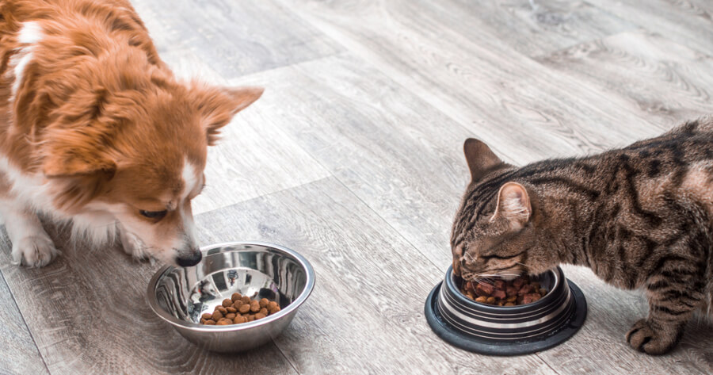
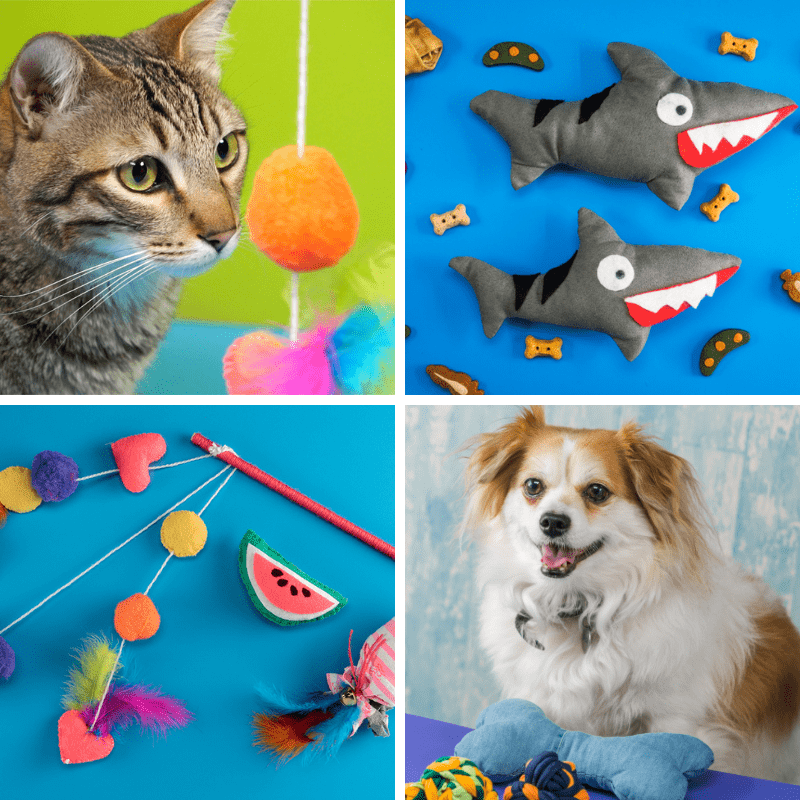
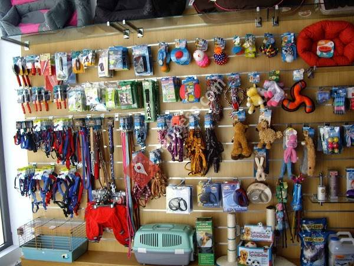

Alimentos
Los mejores alimentos para perros son aquellos que brindan una nutrición equilibrada y de calidad para mantener a tu mascota sana y feliz. Estos alimentos están formulados específicamente para satisfacer las necesidades nutricionales de los perros, proporcionando los nutrientes esenciales que necesitan para mantener un pelaje brillante, una digestión saludable y una energía óptima.
Juguetes
Como mucho, un perro debe tener hasta tres juguetes, cada uno para un disfrute diferente y siempre de manera moderada (como recompensa, para limpiar sus dientes y fortalecerlos). Consúltanos para conocer cuáles son los más apropiados para tu mascota, pues según su tamaño, edad y personalidad, pueden variar.
Accesorios
El mejor tipo es un collar plano estándar que se ajusta fácilmente con una hebilla de liberación rápida y un anillo de metal para colocar la etiqueta de identificación y la correa de su perro. Los collares de una sola capa son preferibles, ya que existe evidencia de que los collares de doble capa con acolchado pueden causar una mayor presión en el cuello.